帛冠纺织 · V0.2
小而精的产品故事
中小品牌如何用叙事打动客户
规模不大的品牌，如何用更精细、更有温度的方式讲好产品故事？以下五个案例，每个都是年营收千万级别的"小厂"，但产品呈现的质感远超其体量。
为什么看中小品牌
龙头教你"做对"，小厂教你"做巧"
VFM、Chelsea、Camira、Brintons告诉市场"结构应该长什么样"。但没有专业摄影棚，没有年投百万的品牌预算。帛冠需要的是：在有限资源下，如何让产品卡既有故事感又有专业度。
以下五个品牌，规模从10人到80人不等，年营收在300万到1200万美元之间。他们的共同特点是：产品呈现的品质远远超过了他们的体量。每一个都在用不同的方式回答同一个问题——"我很小，但我的故事很大"。
核心判断：帛冠V1产品卡的竞争力不在于模仿大牌的"高级感"，而在于找到属于自己规模的"精致感"。以下五个案例提供了五种不同的精致路径。
案例一 · 极简触感叙事
HUIS · 遠州織物（日本静冈）
HUIS是日本远州地区的微型面料品牌，核心只有不到10个人。他们用濒临消失的旧式梭织机（shuttle loom）织布，然后做成日常服饰。产品目录设计——干净到令人屏息。
以下为HUIS 2025春夏目录实拍页面：
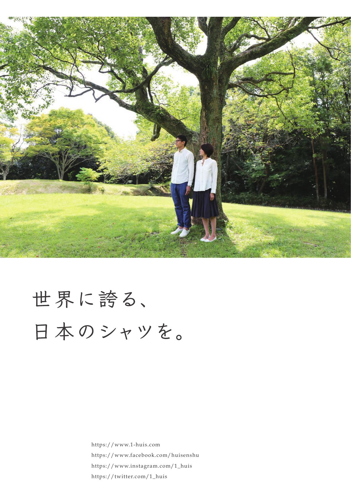
面料触感特写 · 自然光下的蓬松空气感
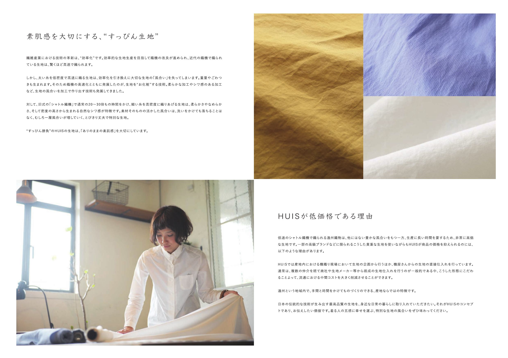
产品展示页 · 极简留白+单品聚焦
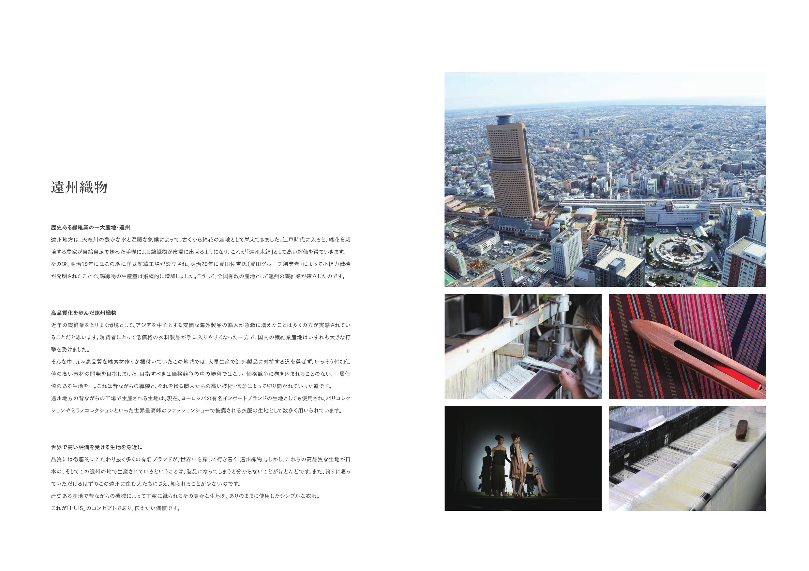
色彩系列 · 每款只用一张图+一行文字
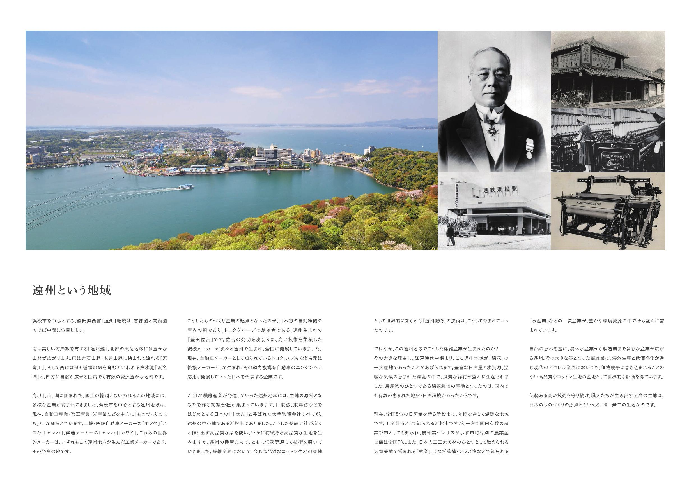
生活场景 · 面料在日常中的呈现
产品叙事策略
HUIS的每一款面料都不是在讲"面料参数"，而是在讲"这台织机的故事"。核心叙事：旧式梭织机转速极低（现代织机的1/5），但正因为慢，纬线不被过度拉伸，织出的布有一种现代织机永远无法复制的蓬松空气感。"慢"不是劣势，而是产品的核心卖点。
视觉风格：
极简留白 gallery式排版 面料触感特写 自然光
季节目录每页通常只有一张图+一行文字。图片永远是自然光下的面料近距离触感照——不是平铺的"色卡照"，而是有皱褶、有光影、有空气感的"生活照"。参数信息被藏在最后的表格页。每季目录的封面不是产品图，而是一张远州地区的风景——茶田、木造工坊、阳光穿过纱窗。产品是从这片土地"长出来"的。
HUIS对帛冠的启示：即使只有一台织机、一种面料，也能做出有故事的产品卡。关键是找到你的"核心矛盾"——HUIS的是"慢vs快"，帛冠的可能是"功能vs美感""工业vs手工""批量vs定制"。把这个矛盾变成每张卡片的叙事引擎。而且——"少即是多"：一张好图+一句准确的话，比10张普通图+一页说明文有效得多。
案例二 · 设计师联名+地域叙事
Røros Tweed（挪威罗弗敦）
Røros Tweed位于挪威的Røros小镇（UNESCO世界遗产地），自1940年起生产羊毛制品。规模不大，但品牌形象做到了欧洲一线水准。秘诀：每个产品系列都由命名设计师主导，MOS Oslo（挪威顶级创意机构）做品牌设计。
以下为Røros Tweed 2024 Lookbook实拍页面：
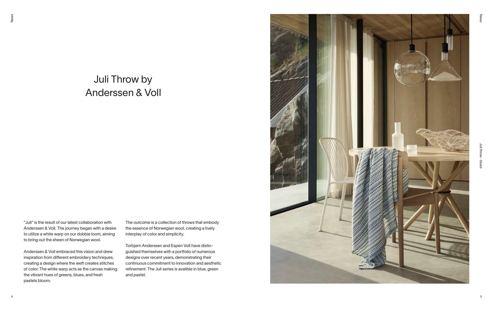
场景摄影 · 产品在挪威自然环境中的呈现
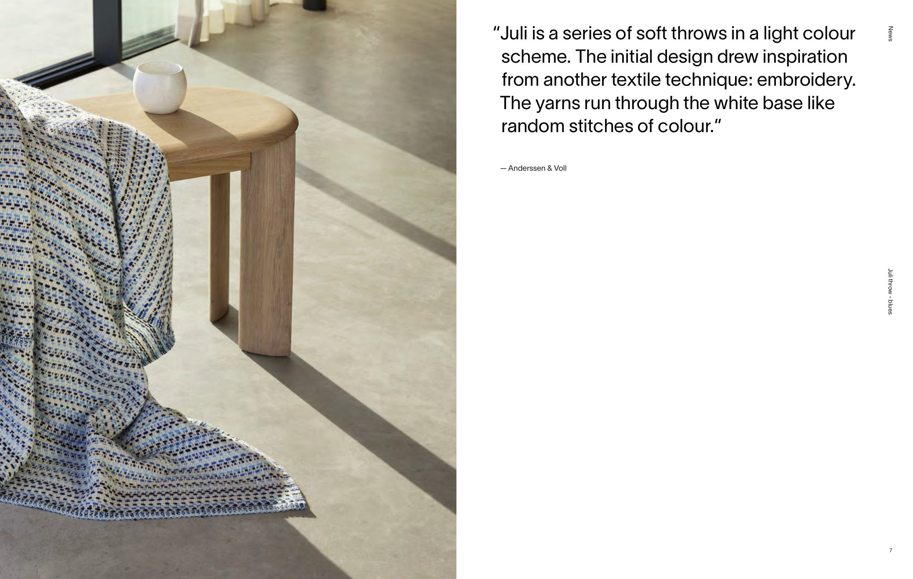
产品特写 · 羊毛质感与色彩叙事
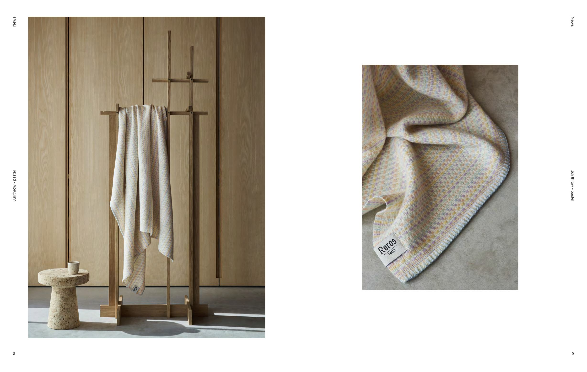
设计师系列 · 每条毯子都有署名创作者
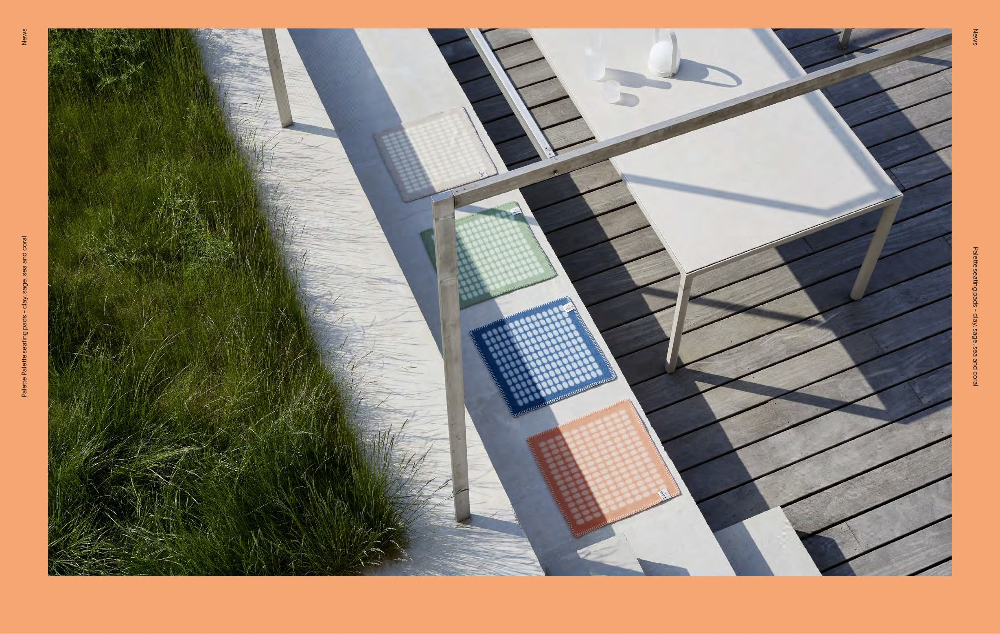
色彩源自地貌 · "极光绿""冻土灰""浆果红"
产品叙事策略
"设计师就是产品故事"——每一条毯子都有一位署名设计师（Runa Klock、Andreas Engesvik等）。产品页面不只讲面料参数，而是讲"这位设计师为什么要设计这条毯子"、"灵感来自哪里"、"从草图到成品经历了什么"。客户买的不只是一条羊毛毯，而是一位设计师的创作意图。
视觉风格：
北欧当代 大气场景摄影 设计师肖像 挪威自然光
Lookbook典型页面结构：左页是产品在挪威木屋/雪景/峡湾中的场景照，右页是设计师草图+灵感来源+叙事文案。Røros镇本身就是故事——300年矿业历史、极端气候、羊毛传统。每本lookbook都会花1-2页介绍这个小镇，让客户理解"为什么这里能织出这样的毯子"。
Røros Tweed对帛冠的启示：两个核心策略可借鉴——①"人格化产品"：给每款面料一个"主理人"或"设计意图"，哪怕只是业务员自己的选品理由；②"地域叙事"：帛冠在哪里？工厂周围有什么？城市有什么纺织历史？把这些"产地故事"编织进每张产品卡的底层。
案例三 · 季节情感叙事
Lapuan Kankurit（芬兰拉普阿）
Lapuan Kankurit是芬兰西部小镇Lapua的家族织造厂，三代人经营。产品线覆盖亚麻毯、羊毛围巾、桌布、浴巾。规模不大，但品牌调性做到了北欧设计的一线水准——与Marimekko同台出现在赫尔辛基设计周，产品进入MoMA Design Store。
以下为Lapuan Kankurit S/S 2026 造型摄影（Styling: Susanna Vento）：

生活场景 · 自然光下的亚麻织物

季节情绪 · 产品在日常空间中的呈现

材质特写 · 芬兰夏日的柔和色调

空间搭配 · 织物与居住环境的融合
产品叙事策略
Lapuan Kankurit的核心策略是"季节情感"——不是按产品线分类，而是按季节情绪分类。春夏目录里，亚麻毯和浴巾被放在同一个"湖畔"场景里；秋冬目录里，羊毛毯和围巾被放在同一个"壁炉"场景里。客户买的不是"一条毯子"，而是"一个季节的感觉"。
视觉风格：
季节情绪摄影 芬兰自然光 生活场景优先 柔和色调
目录的典型页面：左页是产品在芬兰湖区/森林/木屋中的场景照（永远有人在使用——披着毯子看书、用亚麻巾擦手），右页是产品平铺照+极简参数（材质、尺寸、色号）。文案极短，通常只有一句话，但那句话永远在讲"感觉"而不是"功能"——"The weight of a summer evening"（一个夏夜的重量）。
更值得注意的是他们的"设计师合作"模式：每季邀请1-2位芬兰设计师（如Mifuko合作系列、Aoi Yoshizawa系列），但不像Røros那样把设计师变成主角——设计师是"幕后"的，产品本身和季节情绪才是主角。这让品牌调性始终统一，不会因为设计师风格差异而分裂。
Lapuan Kankurit对帛冠的启示："按场景/情绪分组"比"按产品线分组"更有销售力。帛冠可以把面料按使用场景重新组织——"商务差旅系列""周末休闲系列""礼服场合系列"——每个场景就是一个情绪入口。客户不是在找"一块涤纶混纺"，而是在找"出差三天不皱的那种感觉"。
案例四 · 材料传记叙事
Le Minor（法国布列塔尼）
Le Minor是布列塔尼的百年织造厂，以水手条纹衫（marinière）闻名。2018年被新团队接手后重新定位：不再只做成衣，而是把"布列塔尼织造"本身变成品牌资产。他们的核心产品叙事工具是一本叫"Livre des Étoffes"（面料之书）的实体册子——每块布都有自己的"传记"。
以下为Le Minor "Livre des Étoffes"（面料之书）及工坊实拍：
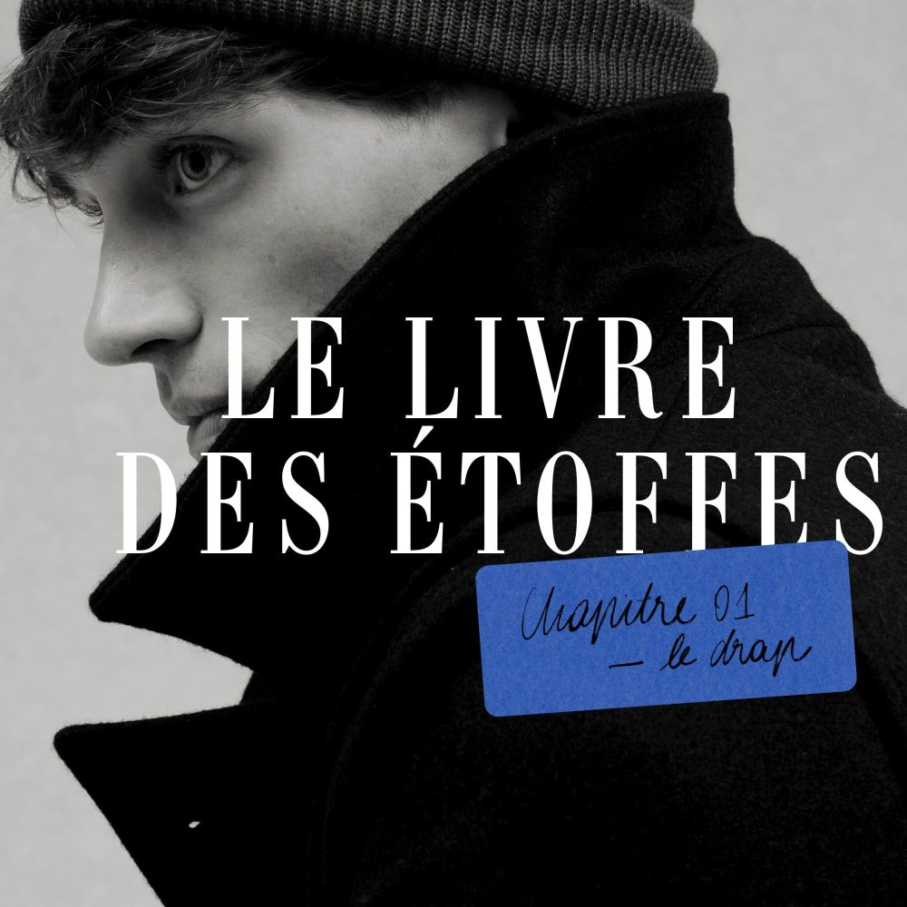
Livre des Étoffes · 面料之书概念视觉
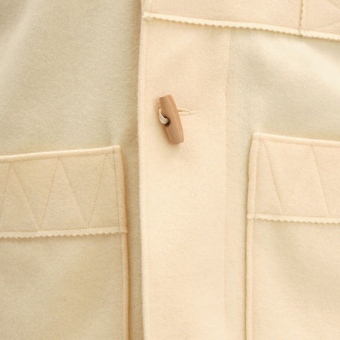
Kabig大衣 · 百年工艺的羊毛呢面料
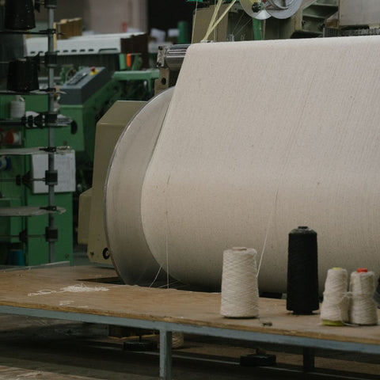
Jules Tournier工坊 · 1865年至今的织造传承
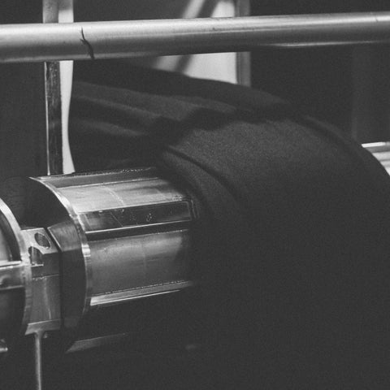
工坊纪实 · 从纱线到成品的完整链路
产品叙事策略
"材料传记"——Le Minor为每款面料写一份完整的"生命故事"：棉花在哪里种的、纱线怎么纺的、织机用的什么型号、染色用的什么工艺、最终适合做什么。这不是技术规格表——它读起来像一篇短文，有起承转合，有"主角"（这块布）的成长历程。客户读完会觉得自己"认识"这块布。
视觉风格：
工坊纪实摄影 材料特写 手写体标注 法式克制排版
Le Minor的视觉策略是"工坊纪实"——大量使用织机运转中的照片、工人手部特写、纱线从原料到成品的过程照。排版上借鉴法式出版物的克制感：大量留白、衬线字体、偶尔出现的手写体标注（像是工匠在样品上做的笔记）。整体感觉不是"广告"，而是"档案"——一种有温度的档案。
他们还有一个巧妙的做法：每款面料都有一个"推荐搭配"——不是搭配其他面料，而是搭配一个具体的生活场景。比如他们的经典条纹针织布，推荐场景是"周六早晨去面包店的路上"。这把一块布变成了一个生活方式的符号。
Le Minor对帛冠的启示："材料传记"是帛冠最可直接复用的策略。帛冠的每款面料都有一条完整的生产链——从纤维选择到织造到后整理。把这条链写成一个"故事"而不是一张"表格"，就是Le Minor在做的事。AI模型可以自动把参数转译成叙事："这款面料的旅程从新疆长绒棉开始，经过40支精梳……"
案例五 · 建筑几何叙事
Johanna Gullichsen（芬兰赫尔辛基）
Johanna Gullichsen是芬兰建筑师Alvar Aalto的曾孙女，她把建筑思维带入了纺织设计。品牌只做一件事：用严格的几何图案织造功能性面料。每款面料都像一张建筑平面图——精确、模块化、可无限延展。
以下为Johanna Gullichsen 2023产品目录实拍页面：
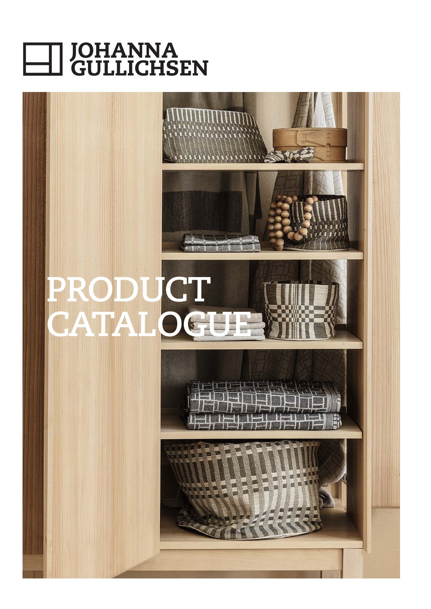
目录封面 · 几何图案的建筑感呈现
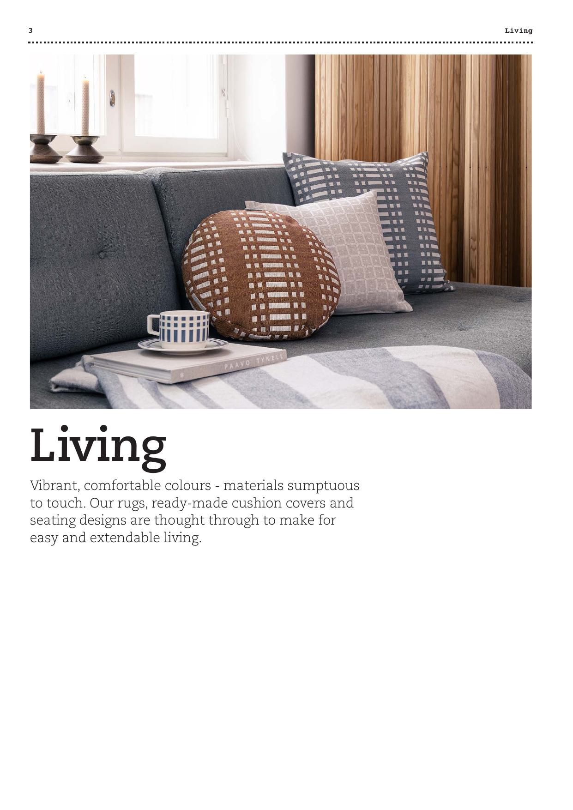
产品系列 · 图案解构与材料说明
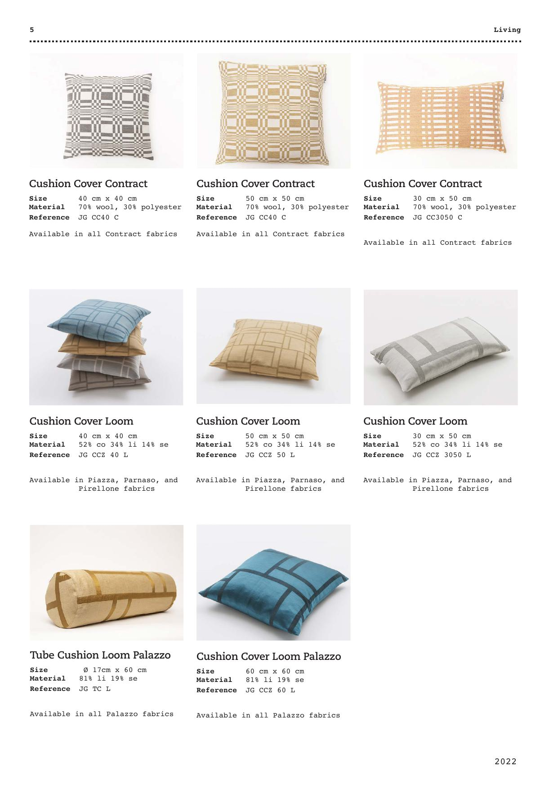
空间应用 · 织物在建筑空间中的效果
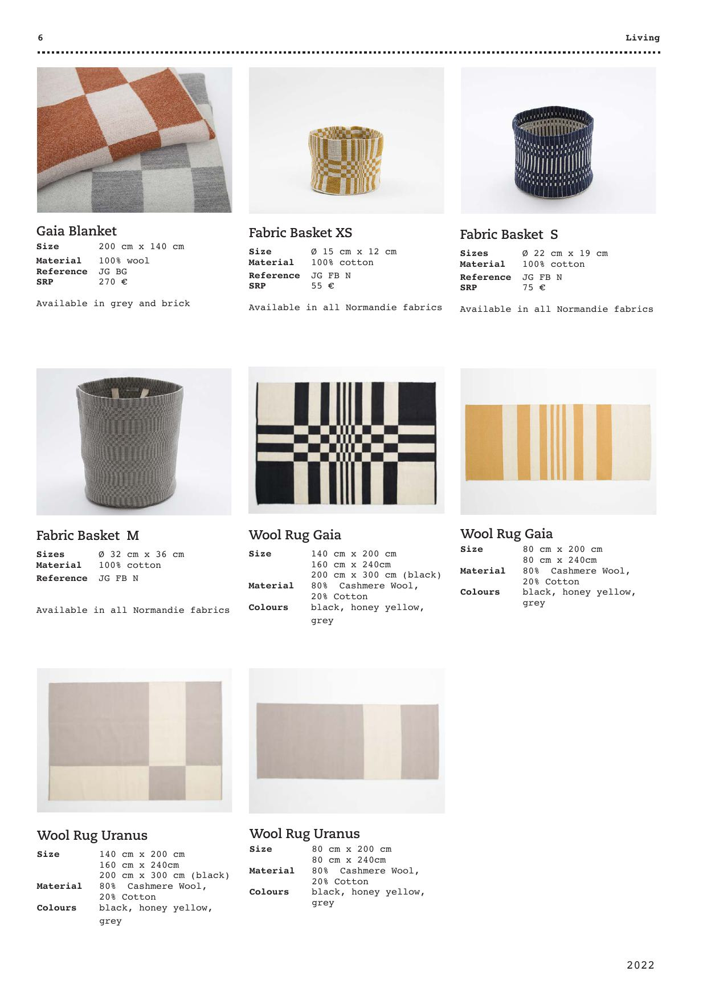
色彩系统 · 模块化的几何配色逻辑
产品叙事策略
"建筑逻辑"——Johanna Gullichsen不讲"这块布手感如何"，而是讲"这个图案的几何逻辑是什么"。每款面料的产品页都从一张"图案解构图"开始——像建筑图纸一样标注repeat单元、对称轴、比例关系。然后才是材料信息和应用场景。客户买的不是"一块好看的布"，而是"一套可以在空间中无限延展的视觉系统"。
视觉风格：
建筑摄影风格 几何图案解构 黑白+单色 模块化展示
视觉呈现极度克制：白色背景、无装饰、产品照永远是正面平铺或45度角。但有一个独特元素——每款面料旁边都会放一张"空间应用图"，展示这块布在真实建筑空间中的效果（椅面、窗帘、隔断）。这种"从图案到空间"的跳跃，让客户立刻理解这块布的使用价值。
她的命名系统也值得注意：每个系列都以地名命名（Doris、Normandie、Helios），但这些地名不是产地——而是"灵感来源地"。Normandie系列的灵感来自诺曼底海岸的鹅卵石排列，Doris系列来自古希腊多利安柱式的比例。命名本身就是一个故事入口。
Johanna Gullichsen对帛冠的启示："系统化展示"的思路对帛冠的提花、大循环面料特别适用。帛冠有很多面料的卖点恰恰是"图案设计"——与其只放一张平铺照，不如展示"图案逻辑→单品效果→空间效果"的三级跳。让客户看到一块布如何从一个repeat单元变成一整面墙、一整张沙发。
综合分析
五种小而精的路径，帛冠该走哪条？
五个案例，五种完全不同的"精致"策略。它们的共同点不是视觉风格，而是一个底层逻辑：每个品牌都找到了一个属于自己的"核心矛盾"，然后把这个矛盾变成了产品叙事的引擎。
五种路径一览
HUIS — 慢 vs 快 → "因为慢，所以有空气感"
Røros Tweed — 设计师 vs 产地 → "每条毯子都有署名创作者"
Lapuan Kankurit — 季节 vs 产品 → "买的不是毯子，是一个季节的感觉"
Le Minor — 材料 vs 故事 → "每块布都有一本护照"
Johanna Gullichsen — 图案 vs 空间 → "织物是柔软的建筑"